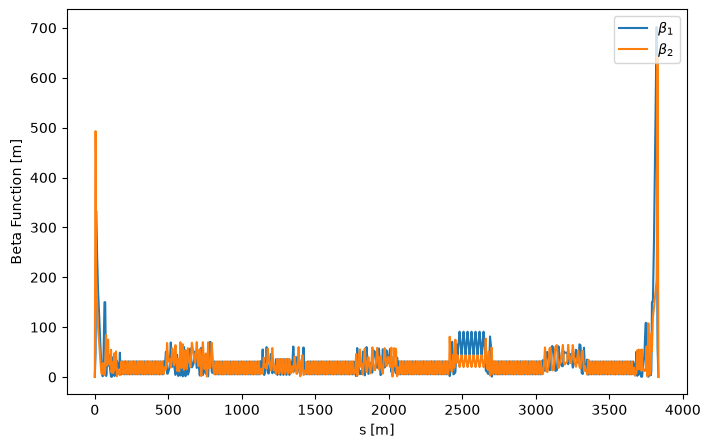
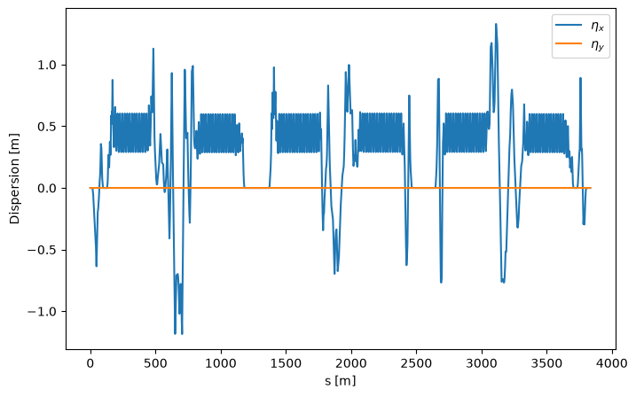
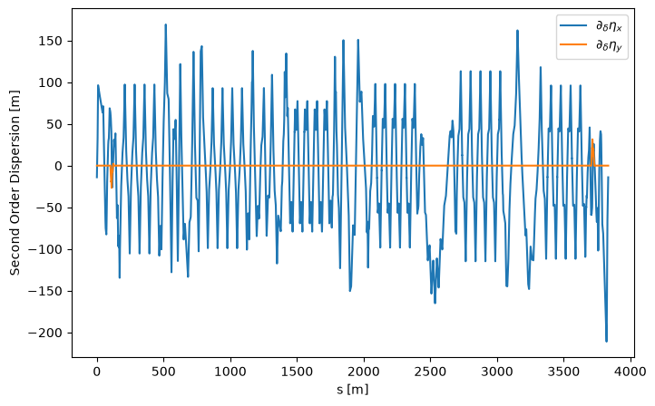
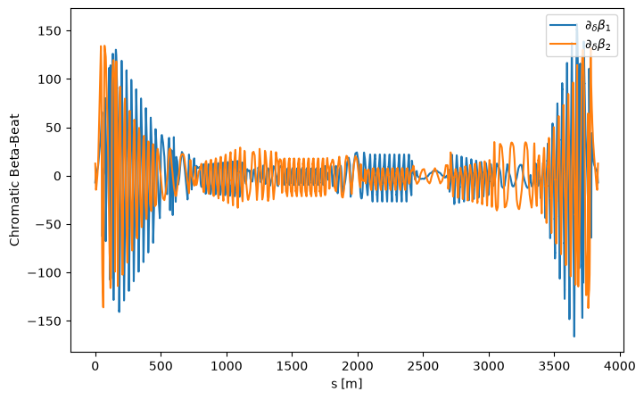
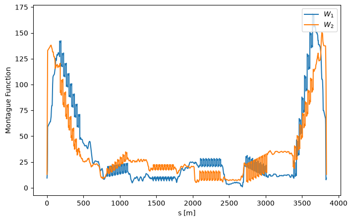
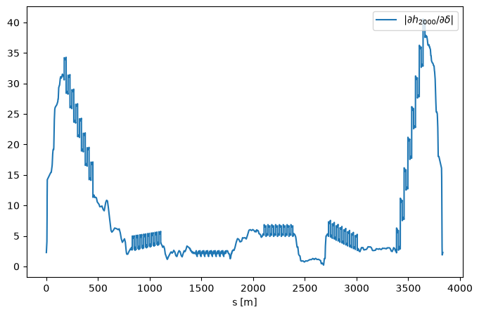
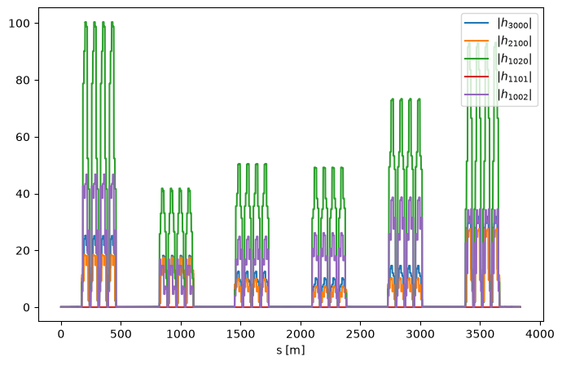
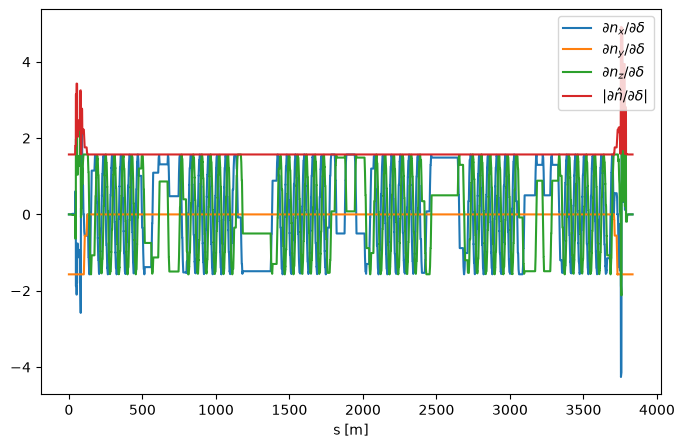

Nonlinear Twiss¶
This Jupyter notebook introduces SciBmad’s parametric nonlinear normal form routines, with the goal of familiarizing users with Truncated Power Series Algebra (TPSA) methods in accelerator physics. Various “nonlinear Twiss” calculations are made using the Electron Storage Ring of the Electron-Ion Collider. E.g., we will compute the beta function as a Taylor series in the momentum deviation \(\delta\), and can also do so as a Taylor series in variations of some parameters, e.g. sextupole strengths.
Map-based perturbation theory is an approach to perturbation theory introduced by Dragt and Finn, and developed in great detail for accelerator physics applications by Forest back in the early 90s. It is the only fully general and self consistent way to compute all such important quantities of the map, without any approximations up to the truncation order of the Taylor series. All quantities computed by SciBmad use this most powerful and general formalism.
import numpy as np
import matplotlib.pyplot as plt
import scibmad as sb
# ESR lattice in the lattices directory of the SciBmad repository
ring = sb.julia.include("../../lattices/esr-v6.3.1.jl").ring
Let’s start by just calling twiss:
tw = sb.twiss(ring)
tw
Twiss:
summ:
q1 = 48.07999999808012
q2 = 44.140000003805
etac = 0.0006088732861226077
alphac = 0.0006088741059934764
df:
6271×26 DataFrame
Row │ index name kind s beta1 phi1 dx x beta2 phi2 ⋯
│ [m] [m] [2π] [m] [m] [m] [2π] ⋯
──────┼─────────────────────────────────────────────────────────────────────────────────────────────────────────────────
1 │ 1 IP6 Marker 0.0 0.589999 0.0 4.74366e-8 0.0 0.057 0.0 ⋯
2 │ 2 DRIFT0 Drift 0.0 0.589999 0.0 4.74366e-8 0.0 0.057 0.0
3 │ 3 Q1ER_6 Quadrupole 5.3 48.2002 0.232355 6.01291e-7 0.0 492.864 0.2482
4 │ 4 DRIFT1 Drift 7.1 151.952 0.236135 1.05195e-6 0.0 443.806 0.2488
5 │ 5 Q2ER_6 Quadrupole 7.6 220.652 0.236569 1.26542e-6 0.0 337.908 0.2490 ⋯
6 │ 6 DRIFT2 Drift 9.0 333.073 0.237332 1.5499e-6 0.0 210.908 0.2499
7 │ 7 D2ER_6 SBend 16.75 233.455 0.241756 1.27366e-6 0.0 140.331 0.2571
8 │ 8 DRIFT3 Drift 22.2501 173.733 0.246103 -0.054998 6.93889e-18 99.3116 0.2645
9 │ 9 SQ3ER_6 Quadrupole 42.0647 34.08 0.287554 -0.451304 7.56846e-17 14.3839 0.3523 ⋯
10 │ 10 DRIFT4 Drift 42.3147 33.0731 0.288739 -0.456304 7.6552e-17 13.9426 0.3551
11 │ 11 Q3ER_6 Quadrupole 42.4647 32.4781 0.289467 -0.459304 7.70724e-17 13.6853 0.3568
12 │ 12 DRIFT5 Drift 43.0647 30.9912 0.292491 -0.477448 8.01853e-17 12.3713 0.3641
⋮ │ ⋮ ⋮ ⋮ ⋮ ⋮ ⋮ ⋮ ⋮ ⋮ ⋮ ⋱
6261 │ 6261 D2EF_6 SBend 3799.84 206.54 47.8317 -0.0219773 -4.85391e-16 129.123 43.8666 ⋯
6262 │ 6262 DRIFT2659 Drift 3802.56 252.266 47.8336 -0.0010574 -5.16948e-16 136.248 43.8699
6263 │ 6263 D1EF_6 SBend 3802.82 256.84 47.8338 -0.000669813 -5.19637e-16 136.937 43.8702
6264 │ 6264 DRIFT2660 Drift 3803.71 272.942 47.8343 -1.29802e-6 -5.28765e-16 139.336 43.8712
6265 │ 6265 MCOLL_MASK Marker 3821.63 701.78 47.8408 -2.01029e-6 -7.1141e-16 194.398 43.8886 ⋯
6266 │ 6266 Q1EF_6 Quadrupole 3821.63 701.78 47.8408 -2.01029e-6 -7.1141e-16 194.398 43.8886
6267 │ 6267 DRIFT2661 Drift 3823.24 575.384 47.8412 -1.81637e-6 -6.36815e-16 255.945 43.8898
6268 │ 6268 Q0EF_6 Quadrupole 3827.0 109.246 47.8436 -7.80829e-7 -2.57638e-16 642.313 43.8913
6269 │ 6269 DRIFT2662 Drift 3828.2 57.607 47.8461 -5.58669e-7 -1.71732e-16 590.232 43.8916 ⋯
6270 │ 6270 IP6 Marker 3834.0 0.589999 48.08 4.74366e-8 9.5421e-17 0.057 44.14
6271 │ -1 END --- 3834.0 0.589999 48.08 4.74366e-8 9.5421e-17 0.057 44.14
17 columns and 6248 rows omitted
To see what properties tw has, use dir:
print([p for p in dir(tw)])
['alpha1', 'alpha2', 'alphac', 'beta1', 'beta2', 'c11', 'c12', 'c21', 'c22', 'dpx', 'dpy', 'dx', 'dy', 'etac', 'gammac', 'index', 'kind', 'name', 'phi1', 'phi2', 'px', 'py', 'pz', 'q1', 'q2', 's', 'slip', 'x', 'y', 'z']
The output columns of twiss can be customized using the cols keyword argument. For all possible columns, see help(sb.twiss).
We can plot the betas:
fig, ax = plt.subplots(figsize=(8, 5))
ax.plot(tw.s, tw.beta1, label=r"$\beta_1$")
ax.plot(tw.s, tw.beta2, label=r"$\beta_2$")
ax.set(xlabel="s [m]", ylabel="Beta Function [m]")
ax.legend(loc="upper right");

Note that the plot shows \(\beta_1\) and \(\beta_2\) using a Teng-Edwards coupling formalism.
The closed orbit can be accessed from fields x, px, y, py, z, and pz, and the periodic dispersion can be obtained from dx, dpx, dy, and dpy. The syntax d<column>_<order> can be used for any scalar-valued to take a chromatic derivative, and by omitting _<order> the order is assumed to be 1.
fig, ax = plt.subplots(figsize=(8, 5))
ax.plot(tw.s, tw.dx, label=r"$\eta_x$")
ax.plot(tw.s, tw.dy, label=r"$\eta_y$")
ax.set(xlabel="s [m]", ylabel="Dispersion [m]")
ax.legend(loc="upper right");

Higher order chromatic quantities can be computed by setting the chromatic order chrom appropriately, and requesting the corresponding column in the twiss result using cols. E.g., to get the second order dispersions \(\frac{\partial^2x}{\partial\delta^2}\), \(\frac{\partial^2y}{\partial\delta^2}\) as well as the chromatic beta beat \(\frac{\partial\beta_1}{\partial\delta}\), \(\frac{\partial\beta_2}{\partial\delta}\):
tw2 = sb.twiss(ring, cols=["dx_2", "dy_2", "beta1", "dbeta1", "beta2", "dbeta2"], chrom=2)
tw2
Twiss:
summ:
q1 = 48.07999999808012 + 1.0002276718873708 δ
q2 = 44.140000003805 + 1.0008473253740475 δ
etac = 0.0006088732861225831 + 0.0011325507772318268 δ
alphac = 0.00060887410599342 + 0.0011325483186177044 δ
df:
6271×10 DataFrame
Row │ index name kind s dx_2 dy_2 beta1 dbeta1 beta2 dbeta2 ⋯
│ [m] [m] [m] ⋯
──────┼─────────────────────────────────────────────────────────────────────────────────────────────────────────────────
1 │ 1 IP6 Marker 0.0 -13.9699 4.89151e-5 0.589999 -4.13539 0.057 0.718 ⋯
2 │ 2 DRIFT0 Drift 0.0 -13.9699 4.89151e-5 0.589999 -4.13539 0.057 0.718
3 │ 3 Q1ER_6 Quadrupole 5.3 32.5881 0.00436896 48.2002 167.133 492.864 -7162.17
4 │ 4 DRIFT1 Drift 7.1 63.3539 0.00413133 151.952 500.61 443.806 -6116.26
5 │ 5 Q2ER_6 Quadrupole 7.6 77.1023 0.00360006 220.652 693.403 337.908 -4467.09 ⋯
6 │ 6 DRIFT2 Drift 9.0 96.3624 0.00282745 333.073 1087.41 210.908 -2380.96
7 │ 7 D2ER_6 SBend 16.75 88.5706 0.00219472 233.455 1616.29 140.331 158.314
8 │ 8 DRIFT3 Drift 22.2501 83.1513 0.00174523 173.733 1823.29 99.3116 1385.57
9 │ 9 SQ3ER_6 Quadrupole 42.0647 64.0225 0.000124665 34.08 1409.73 14.3839 1843.05 ⋯
10 │ 10 DRIFT4 Drift 42.3147 63.7812 0.000104218 33.0731 1392.92 13.9426 1809.19
11 │ 11 Q3ER_6 Quadrupole 42.4647 63.6364 9.19504e-5 32.4781 1382.69 13.6853 1788.4
12 │ 12 DRIFT5 Drift 43.0647 63.9108 4.18807e-5 30.9912 1376.1 12.3713 1656.61
⋮ │ ⋮ ⋮ ⋮ ⋮ ⋮ ⋮ ⋮ ⋮ ⋮ ⋮ ⋱
6261 │ 6261 D2EF_6 SBend 3799.84 -99.7285 -0.00252814 206.54 2966.98 129.123 3787.18 ⋯
6262 │ 6262 DRIFT2659 Drift 3802.56 -113.691 -0.00255463 252.266 3139.15 136.248 3232.71
6263 │ 6263 D1EF_6 SBend 3802.82 -115.011 -0.00255712 256.84 3154.04 136.937 3178.14
6264 │ 6264 DRIFT2660 Drift 3803.71 -119.565 -0.00256571 272.942 3203.51 139.336 2987.24
6265 │ 6265 MCOLL_MASK Marker 3821.63 -211.083 -0.0027384 701.78 3571.71 194.398 -1711.76 ⋯
6266 │ 6266 Q1EF_6 Quadrupole 3821.63 -211.083 -0.0027384 701.78 3571.71 194.398 -1711.76
6267 │ 6267 DRIFT2661 Drift 3823.24 -192.16 -0.00311756 575.384 2860.56 255.945 -2849.64
6268 │ 6268 Q0EF_6 Quadrupole 3827.0 -86.4911 -0.00489041 109.246 627.472 642.313 -9215.67
6269 │ 6269 DRIFT2662 Drift 3828.2 -64.9202 -0.00467868 57.607 355.031 590.232 -8655.41 ⋯
6270 │ 6270 IP6 Marker 3834.0 -13.9699 4.89151e-5 0.589999 -4.13539 0.057 0.718
6271 │ -1 END --- 3834.0 -13.9699 4.89151e-5 0.589999 -4.13539 0.057 0.718
1 column and 6248 rows omitted
Note the chromaticities have also been computed
fig, ax = plt.subplots(figsize=(8, 5))
ax.plot(tw2.s, tw2.dx_2, label=r"$\partial_\delta\eta_x$")
ax.plot(tw2.s, tw2.dy_2, label=r"$\partial_\delta\eta_y$")
ax.set(xlabel="s [m]", ylabel="Second Order Dispersion [m]")
ax.legend(loc="upper right");

fig, ax = plt.subplots(figsize=(8, 5))
ax.plot(tw2.s, tw2.dbeta1 / tw2.beta1, label=r"$\partial_\delta\beta_1$")
ax.plot(tw2.s, tw2.dbeta2 / tw2.beta2, label=r"$\partial_\delta\beta_2$")
ax.set(xlabel="s [m]", ylabel="Chromatic Beta-Beat")
ax.legend(loc="upper right");

We can also write the Montague functions, which are phase invariants in achromatic regions, as
tww = sb.twiss(ring, cols=["w1", "w2"], chrom=2)
tww
Twiss:
summ:
q1 = 48.07999999808012 + 1.0002276718873708 δ
q2 = 44.140000003805 + 1.0008473253740475 δ
etac = 0.0006088732861225831 + 0.0011325507772318268 δ
alphac = 0.00060887410599342 + 0.0011325483186177044 δ
df:
6271×6 DataFrame
Row │ index name kind s w1 w2
│ [m] [1] [1]
──────┼──────────────────────────────────────────────────────────────
1 │ 1 IP6 Marker 0.0 9.45204 13.0064
2 │ 2 DRIFT0 Drift 0.0 9.45204 13.0064
3 │ 3 Q1ER_6 Quadrupole 5.3 16.8513 90.6522
4 │ 4 DRIFT1 Drift 7.1 34.6455 105.245
5 │ 5 Q2ER_6 Quadrupole 7.6 47.3488 119.518
6 │ 6 DRIFT2 Drift 9.0 59.043 132.939
7 │ 7 D2ER_6 SBend 16.75 60.1801 133.801
8 │ 8 DRIFT3 Drift 22.2501 60.9898 134.423
9 │ 9 SQ3ER_6 Quadrupole 42.0647 63.9039 136.647
10 │ 10 DRIFT4 Drift 42.3147 63.9407 136.675
11 │ 11 Q3ER_6 Quadrupole 42.4647 63.9628 136.692
12 │ 12 DRIFT5 Drift 43.0647 64.0044 136.792
⋮ │ ⋮ ⋮ ⋮ ⋮ ⋮ ⋮
6261 │ 6261 D2EF_6 SBend 3799.84 73.7095 137.617
6262 │ 6262 DRIFT2659 Drift 3802.56 72.8592 137.586
6263 │ 6263 D1EF_6 SBend 3802.82 72.7788 137.583
6264 │ 6264 DRIFT2660 Drift 3803.71 72.5013 137.575
6265 │ 6265 MCOLL_MASK Marker 3821.63 66.9226 137.415
6266 │ 6266 Q1EF_6 Quadrupole 3821.63 66.9226 137.415
6267 │ 6267 DRIFT2661 Drift 3823.24 60.7257 134.087
6268 │ 6268 Q0EF_6 Quadrupole 3827.0 13.2809 111.098
6269 │ 6269 DRIFT2662 Drift 3828.2 7.82958 105.719
6270 │ 6270 IP6 Marker 3834.0 9.45204 13.0064
6271 │ -1 END --- 3834.0 9.45204 13.0064
6248 rows omitted
fig, ax = plt.subplots(figsize=(8, 5))
ax.plot(tww.s, tww.w1, label=r"$W_1$")
ax.plot(tww.s, tww.w2, label=r"$W_2$")
ax.set(xlabel="s [m]", ylabel="Montague Function")
ax.legend(loc="upper right");

Using the operator notation, the nonlinear effective Hamiltonian is defined as the polynomial \(h\) in
where \(\mathcal{M}\) is the compositional operator representing the one turn map and \(\mathcal{A}_{cs}\) is the compositional operator representing only a linear (Courant Snyder) normalizing transformation. Monomials of \(h\) are sometimes referred to as “resonance driving terms” and “detune coefficients”.
We can extract any monomial of the nonlinear effective Hamiltonian by simply setting the order of twiss appropriately (must be at least one less than the total order of the monomial). And, if the beam is coasting, we can take chromatic derivatives.
For example to compute \(\frac{\partial h_{2000}}{\partial\delta}\):
twh = sb.twiss(ring, cols=["dh2000"], order=2)
twh
Twiss:
summ:
q1 = 48.07999999808012 + 1.0002276718873144 δ
q2 = 44.140000003805 + 1.0008473253738335 δ
etac = 0.0006088732861226077 + 0.0011325507772322252 δ
alphac = 0.0006088741059934445 + 0.0011325483186181028 δ
df:
6271×5 DataFrame
Row │ index name kind s dh2000
│ [m]
──────┼───────────────────────────────────────────────────────────────
1 │ 1 IP6 Marker 0.0 0.743645-2.15193im
2 │ 2 DRIFT0 Drift 0.0 0.743645-2.15193im
3 │ 3 Q1ER_6 Quadrupole 5.3 1.1817+3.88328im
4 │ 4 DRIFT1 Drift 7.1 3.30673+7.66223im
5 │ 5 Q2ER_6 Quadrupole 7.6 4.81905+10.3371im
6 │ 6 DRIFT2 Drift 9.0 6.15191+12.8227im
7 │ 7 D2ER_6 SBend 16.75 5.47572+13.422im
8 │ 8 DRIFT3 Drift 22.2501 4.75662+13.8997im
9 │ 9 SQ3ER_6 Quadrupole 42.0647 -3.07905+15.0819im
10 │ 10 DRIFT4 Drift 42.3147 -3.30707+15.0426im
11 │ 11 Q3ER_6 Quadrupole 42.4647 -3.44692+15.0166im
12 │ 12 DRIFT5 Drift 43.0647 -4.02341+14.8829im
⋮ │ ⋮ ⋮ ⋮ ⋮ ⋮
6261 │ 6261 D2EF_6 SBend 3799.84 -11.4217-13.5934im
6262 │ 6262 DRIFT2659 Drift 3802.56 -10.9573-13.7093im
6263 │ 6263 D1EF_6 SBend 3802.82 -10.9165-13.717im
6264 │ 6264 DRIFT2660 Drift 3803.71 -10.7798-13.7398im
6265 │ 6265 MCOLL_MASK Marker 3821.63 -8.81775-13.4946im
6266 │ 6266 Q1EF_6 Quadrupole 3821.63 -8.81775-13.4946im
6267 │ 6267 DRIFT2661 Drift 3823.24 -8.07258-12.1981im
6268 │ 6268 Q0EF_6 Quadrupole 3827.0 -2.60198-1.86111im
6269 │ 6269 DRIFT2662 Drift 3828.2 -1.86129-0.304146im
6270 │ 6270 IP6 Marker 3834.0 0.743645-2.15193im
6271 │ -1 END --- 3834.0 0.743645-2.15193im
6248 rows omitted
fig, ax = plt.subplots(figsize=(8, 5))
ax.plot(twh.s, np.abs(twh.dh2000), label=r"$|\partial h_{2000}/\partial\delta|$")
ax.set(xlabel="s [m]")
ax.legend(loc="upper right");

Notice that this looks quite a lot like the Montague function - this is correct, and can be intuitively understood because \(h_{2000}\) quantifies the beta-beating oscillating at \(2\times\) the betatron frequency, and \(\partial h_{2000}/\partial\delta\) describes how that depends on \(\delta\).
Of course we can also look at geometric terms:
twh2 = sb.twiss(ring, cols=["h3000", "h2100", "h1020", "h1101", "h1002"], order=2)
fig, ax = plt.subplots(figsize=(8, 5))
for name in ["h3000", "h2100", "h1020", "h1101", "h1002"]:
ax.plot(twh2.s, np.abs(getattr(twh2, name)), label=f"$|h_{{{name[1:]}}}|$")
ax.set(xlabel="s [m]")
ax.legend(loc="upper right");

Because the sextupoles in the arcs have been arranged in \(-I\) pairs, the geometric terms cancel themselves locally.
Spin analysis is also provided in twiss, by setting spin=True.
tws = sb.twiss(ring, spin=True)
fig, ax = plt.subplots(figsize=(8, 5))
ax.plot(tws.s, tws.dnx, label=r"$\partial n_x/\partial\delta$")
ax.plot(tws.s, tws.dny, label=r"$\partial n_y/\partial\delta$")
ax.plot(tws.s, tws.dnz, label=r"$\partial n_z/\partial\delta$")
dn_amp = np.sqrt(np.asarray(tws.dnx)**2 + np.asarray(tws.dny)**2 + np.asarray(tws.dnz)**2)
ax.plot(tws.s, dn_amp, label=r"$|\partial \hat{n}/\partial\delta|$")
ax.set(xlabel="s [m]")
ax.legend(loc="upper right");

Also note the (amplitude-dependent) spin tune will be calculated:
tws.qspin
AmplitudeDependentValue:
-0.4999997778639269 - 39.9999997367878 δ
For higher order tunes, set the order higher:
twtune = sb.twiss(ring, at=[], spin=True, order=3) # at=[] means only compute tunes
twtune.qspin
AmplitudeDependentValue:
-0.4999997778639269 - 39.9999997367878 δ - 0.05106264795980088 J₁ + 2377.9662316135586 J₂ - 1.5845345679169045 δ² + 262.58859924109555 δ J₁ + 245142.30931396713 δ J₂ + 468.7335796509802 δ³
To get a particular term in the Taylor series, use the function getterm:
sb.getterm(twtune.qspin, delta=1, J1=1)
262.58859924109555
Finally, ,more advanced users who have become familiar with GTPSA.jl can get the output as Taylor series by setting the flag as_taylor_series=True. A custom GTPSA descriptor can also be provided with GTPSA_descriptor for doing parametric normal form analysis (see the orbit-response.ipynb example notebook).
twisf = sb.twiss(ring, at=[1], cols=["nx", "ny", "nz"], spin=True, as_taylor_series=True)
n = [twisf.nx[1], twisf.ny[1], twisf.nz[1]]
n
[TPS64{GTPSA.Dynamic}:
Descriptor(NV=6, MO=1)
COEFFICIENT ORDER EXPONENTS
-1.7014762942609857E-15 0 0 0 0 0 0 0
2.9437795671891087E-04 1 1 0 0 0 0 0
-4.1507516882558846E+01 1 0 1 0 0 0 0
-3.3567033718986136E+02 1 0 0 1 0 0 0
-3.1223550771310529E+00 1 0 0 0 1 0 0
-4.3422439755247755E-06 1 0 0 0 0 0 1
,
TPS64{GTPSA.Dynamic}:
Descriptor(NV=6, MO=1)
COEFFICIENT ORDER EXPONENTS
1.9500601133870532E-10 0 0 0 0 0 0 0
-1.3657465543940380E-04 1 1 0 0 0 0 0
1.2501396756456440E-04 1 0 1 0 0 0 0
-5.6419852071752892E+01 1 0 0 1 0 0 0
-2.4600820432436976E+01 1 0 0 0 1 0 0
-1.5707985192657588E+00 1 0 0 0 0 0 1
,
TPS64{GTPSA.Dynamic}:
Descriptor(NV=6, MO=1)
COEFFICIENT ORDER EXPONENTS
-1.0000000000000000E+00 0 0 0 0 0 0 0
-2.6633109359471688E-14 1 1 0 0 0 0 0
9.5002310367242166E-14 1 0 1 0 0 0 0
-1.1001636479876143E-08 1 0 0 1 0 0 0
-4.7973006456281294E-09 1 0 0 0 1 0 0
-3.0631502889363634E-10 1 0 0 0 0 0 1
]